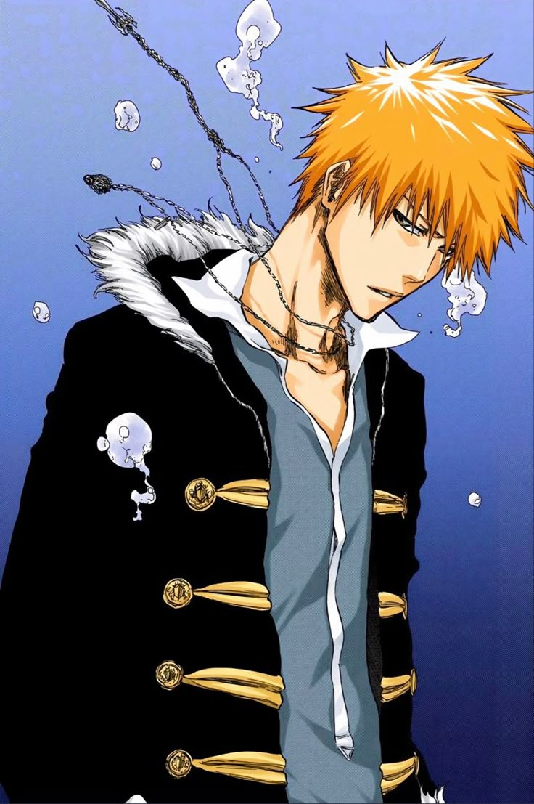

Ichigo Kurosaki adalah remaja yang memperoleh kekuatan Shinigami dan menjadi pelindung dunia manusia dari Hollow dan ancaman lain. Ia memiliki Zanpakutō bernama Zangetsu dan kemudian mengungkap bahwa dirinya juga memiliki kekuatan Hollow, Quincy, dan Fullbring.
Karakternya menggambarkan keteguhan hati, keberanian, dan rasa tanggung jawab. Ia adalah simbol dari konflik internal dan pencarian jati diri dalam dunia yang terpecah.